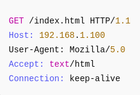
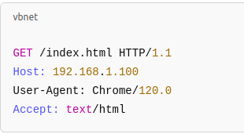
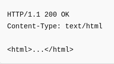
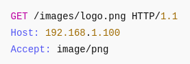
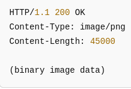

Wie funktioniert die Verbindung zwischen zwei Computern mit XAMPP?
Wenn zwei Computer im gleichen Netzwerk sind und einer XAMPP gestartet hat, kann der zweite Computer darauf zugreifen. Lass uns Schritt für Schritt erklären, wie das funktioniert.
1. Verbindung starten (TCP-Verbindung aufbauen)
Bevor Daten gesendet werden, baut der Browser eine TCP-Verbindung mit dem Server auf.
Das passiert in drei Schritten:
- Der Client (zweiter Computer) sendet SYN (synchronize) – eine Anfrage zur Verbindung.
- Der Server (XAMPP) antwortet mit SYN-ACK (synchronize-acknowledge).
- Der Client sendet ACK (acknowledge) – die Verbindung ist bereit.
Jetzt kann der Browser eine HTTP-Anfrage senden.
2. Der Client sendet eine HTTP-Anfrage
Wenn du http://192.168.1.100/index.html in den Browser eingibst, sendet er eine HTTP-Anfrage an den Server.
Beispiel für eine HTTP-Anfrage:
🔹 Was passiert hier?
- GET /index.html → Der Client fragt nach der Datei index.html.
- Host: 192.168.1.100 → Der Server, zu dem die Anfrage geht.
- User-Agent: ... → Der Browser (Chrome, Firefox, usw.).
- Accept: text/html → Der Client möchte eine HTML-Seite erhalten.
3. Der Server (XAMPP) verarbeitet die Anfrage
Der Apache-Server in XAMPP:
- Prüft, ob die Datei index.html im Ordner htdocs vorhanden ist.
- Wenn ja → Der Server bereitet die Antwort vor.
- Wenn nein → Der Server sendet eine 404 Not Found Fehlermeldung.
4. Der Server sendet eine HTTP-Antwort
Wenn alles korrekt ist, sendet Apache eine Antwort an den Browser.
Beispiel für eine HTTP-Antwort:

🔹 Was passiert hier?
- HTTP/1.1 200 OK → Die Seite wurde erfolgreich gefunden.
- Date: ... → Datum und Uhrzeit der Antwort.
- Server: Apache/2.4.41 (Win64) XAMPP → Informationen über den Server.
- Content-Type: text/html → Die Antwort enthält eine HTML-Seite.
- Content-Length: 234 → Die Größe des HTML-Codes.
Nach diesen Header-Daten kommt der HTML-Code der Seite.
5. Der Browser zeigt die Webseite an
- Der Browser empfängt den HTML-Code und analysiert ihn.
- Wenn Bilder, CSS oder JavaScript benötigt werden, sendet der Browser zusätzliche HTTP-Anfragen an den Server.
- Sobald alle Daten geladen sind, zeigt der Browser die Seite an.
6. Verbindung beenden
Die Verbindung bleibt offen (Connection: keep-alive), um weitere Dateien schneller zu laden.
Oder die Verbindung wird geschlossen (Connection: close), wenn keine weiteren Daten gebraucht werden.
Beispiel für alle Anfragen und Antworten
Beispiel für alle Anfragen und Antworten
Anfrage (vom Client an den Server)
Antwort (vom Server an den Client)
🔹 2. Der Browser entdeckt ein Bild und fragt danach
Anfrage
Antwort
Fazit
Wenn ein zweiter Computer mit dem XAMPP-Server verbunden ist, passiert folgendes:
- Der Browser baut eine TCP-Verbindung zum Server auf.
- Der Client sendet eine HTTP-Anfrage (z. B. GET /index.html).
- Der Server sucht die Datei und bereitet eine Antwort vor.
- Der Server sendet eine HTTP-Antwort mit HTML-Code.
- Der Browser lädt und zeigt die Webseite.
- Zusätzliche Dateien (CSS, Bilder, JS) werden mit weiteren Anfragen geladen.
- Die Verbindung bleibt offen oder wird geschlossen.